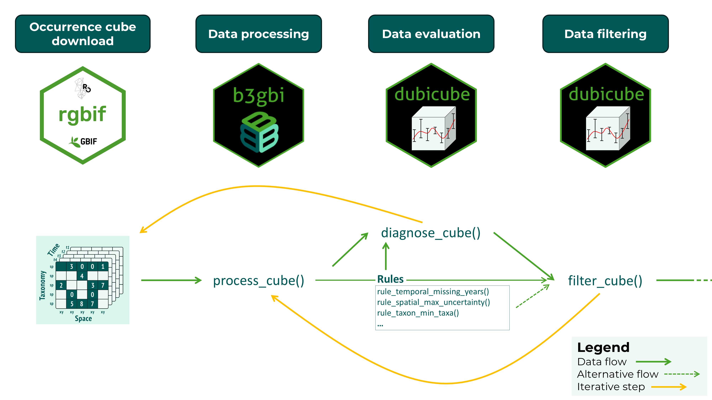
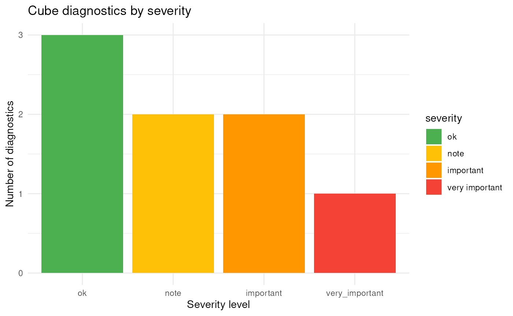
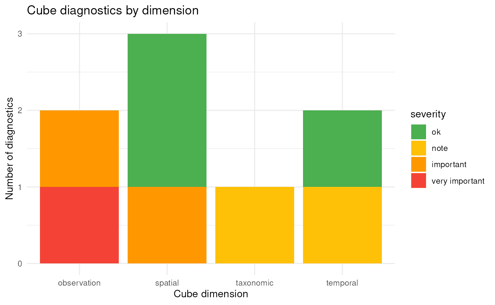
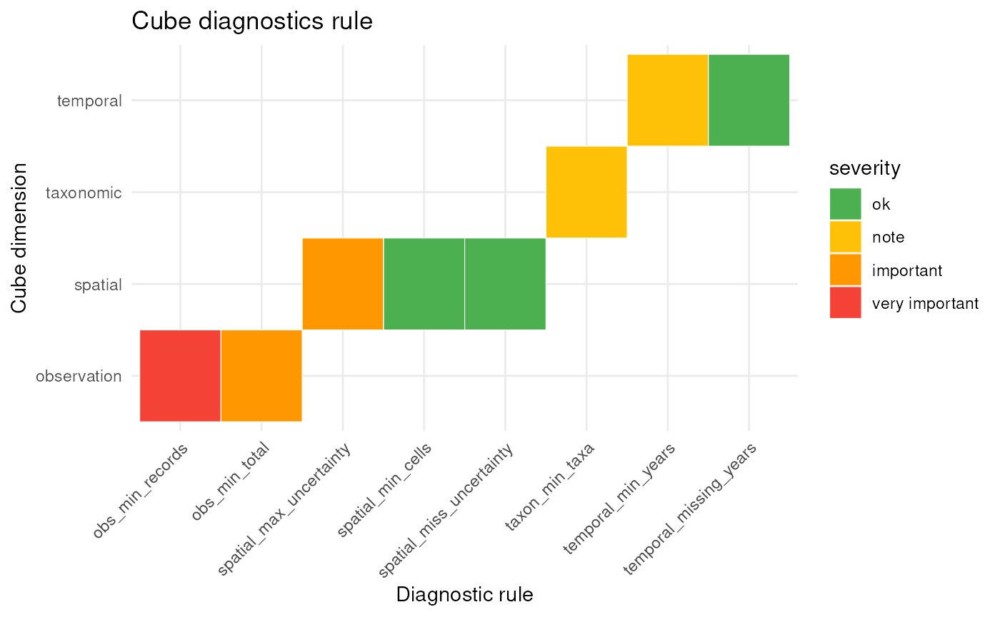

Data Quality Diagnostics and Filtering for Data Cubes
Source:vignettes/articles/diagnostics-and-filtering.Rmd
diagnostics-and-filtering.RmdIntroduction
The dubicube package implements a rule-based diagnostic framework to assess the quality and structural properties of biodiversity data cubes. Diagnostics are applied across key dimensions of the cube, including spatial coverage, temporal coverage, taxonomic representation, and overall observation volume. Each diagnostic is defined as a modular rule that specifies how a metric is calculated and how its value should be interpreted.
Diagnostic rules combine three components: a function to compute a metric from the data cube, a set of threshold values that define reference ranges, and functions that translate the resulting value into a qualitative severity level and a human-readable message. This design ensures that diagnostics are transparent, reproducible, and easily extendable.
Diagnostics are evaluated using the diagnose_cube()
function, which returns a structured overview of data quality. Each
metric is assigned one of four severity levels: ok,
note, important, and very
important, providing an intuitive summary of potential data
limitations.
In addition to evaluation, dubicube supports
filtering of observations based on diagnostic rules. The
filter_cube() function applies rule-specific filtering
logic to remove or flag records that do not meet predefined quality
criteria. This filtering step is optional and allows users to tailor the
data cube to their specific analytical needs.
Together, diagnostics and filtering form a structured and reproducible workflow for assessing and improving biodiversity data cubes prior to analysis. Data evaluation and filtering are iterative steps until a satisfactory cube evaluation is obtained. This final data cube can then be used for further analysis.

Data quality checks with diagnose_cube()
Running diagnostics
We start by creating a small example data cube that contains a range
of common data quality issues, including limited temporal coverage,
large coordinate uncertainty, and low sample size. Note that this is for
illustrative purposes only, real cubes should be processed with
b3gbi::process_cube().
cube <- list(
data = data.frame(
year = c(2000, 2000, 2001, 2001, 2002, 2002, 2003, 2003, 2003),
cellCode = c("A", "A", "B", "B", "C", "C", "D", "D", "E"),
speciesKey = c(1, 1, 1, 2, 2, 3, 3, 3, 3),
scientificName = paste0("spec_", c(1, 1, 1, 2, 2, 3, 3, 3, 3)),
occurrences = c(10, 5, 1, 2, 0, 1, 2, 1, 0),
minCoordinateUncertaintyInMeters = c(
50, 100, 2000, 70, 5000, 2000, 10, 20, 300
)
),
resolutions = "1km"
)
class(cube) <- "processed_cube"We can now evaluate the data quality of this cube using
diagnose_cube().
diag <- diagnose_cube(cube)
#>
#> Data cube diagnostics
#> ----------------------
#> 🟡 NOTE - temporal_min_years
#> Cube contains observations across 4 years.
#>
#> 🟢 OK - temporal_missing_years
#> Cube contains 0 missing years.
#>
#> 🟢 OK - spatial_min_cells
#> Cube contains observations across 5 grid cells.
#>
#> 🟠 IMPORTANT - spatial_max_uncertainty
#> Cube contains 3 records where the coordinate uncertainty is larger than the grid cell resolution.
#>
#> 🟢 OK - spatial_miss_uncertainty
#> Cube contains 0 records with missing coordinate uncertainty.
#>
#> 🟡 NOTE - taxon_min_taxa
#> Cube contains observations across 3 taxon keys.
#>
#> 🔴 VERY_IMPORTANT - obs_min_records
#> Cube contains 9 observation records (rows).
#>
#> 🟠 IMPORTANT - obs_min_total
#> Cube contains a total of 22 observations.By default verbose = TRUE, so we get a summary of
diagnostic results directly in the console and the function returns a
structured cube_diagnostics object for further
inspection.
We can sort the summary with print-arguments.
print(diag, sort_summary = "asc")
#>
#> Data cube diagnostics
#> ----------------------
#> 🟢 OK - temporal_missing_years
#> Cube contains 0 missing years.
#>
#> 🟢 OK - spatial_min_cells
#> Cube contains observations across 5 grid cells.
#>
#> 🟢 OK - spatial_miss_uncertainty
#> Cube contains 0 records with missing coordinate uncertainty.
#>
#> 🟡 NOTE - temporal_min_years
#> Cube contains observations across 4 years.
#>
#> 🟡 NOTE - taxon_min_taxa
#> Cube contains observations across 3 taxon keys.
#>
#> 🟠 IMPORTANT - spatial_max_uncertainty
#> Cube contains 3 records where the coordinate uncertainty is larger than the grid cell resolution.
#>
#> 🟠 IMPORTANT - obs_min_total
#> Cube contains a total of 22 observations.
#>
#> 🔴 VERY_IMPORTANT - obs_min_records
#> Cube contains 9 observation records (rows).We can also filter the summary output based on a minimum severity level.
print(diag, sort_summary = "asc", filter_summary = "note")
#>
#> Data cube diagnostics
#> ----------------------
#> 🟡 NOTE - temporal_min_years
#> Cube contains observations across 4 years.
#>
#> 🟡 NOTE - taxon_min_taxa
#> Cube contains observations across 3 taxon keys.
#>
#> 🟠 IMPORTANT - spatial_max_uncertainty
#> Cube contains 3 records where the coordinate uncertainty is larger than the grid cell resolution.
#>
#> 🟠 IMPORTANT - obs_min_total
#> Cube contains a total of 22 observations.
#>
#> 🔴 VERY_IMPORTANT - obs_min_records
#> Cube contains 9 observation records (rows).Understanding the output
The output object is an object of class
cube_diagnostics, containing one row per metric with the
following columns:
- dimension: Dimension of the cube being evaluated
(e.g.
"spatial","temporal","taxonomical"). - metric: The diagnostic rule that was evaluated.
- value: Computed metric value.
- severity: Severity level (“ok”, “note”, “important”, “very_important”).
- message: Human-readable description of the diagnostic result.
diag$dimension
#> [1] "temporal" "temporal" "spatial" "spatial" "spatial"
#> [6] "taxonomic" "observation" "observation"
diag$metric
#> [1] "temporal_min_years" "temporal_missing_years"
#> [3] "spatial_min_cells" "spatial_max_uncertainty"
#> [5] "spatial_miss_uncertainty" "taxon_min_taxa"
#> [7] "obs_min_records" "obs_min_total"The rule objects are attached as an attribute of the diagnostics object.
The severity levels provide a quick way to assess potential data limitations:
- ok: No issues detected
- note: Minor limitations
- important: Issues that may influence analysis
- very important: Serious limitations that may affect reliability
Summarising diagnostics
To obtain a concise overview of the results, you can use the
summary() method:
summary(diag)
#> <cube_diagnostics_summary>
#>
#> Rules evaluated: 8
#>
#> Severity levels:
#> important note ok very_important
#> 2 2 3 1
#>
#> Dimensions:
#> observation spatial taxonomic temporal
#> 2 3 1 2
#>
#> Flagged diagnostics:
#>
#> Data cube diagnostics
#> ----------------------
#> 🟡 NOTE - temporal_min_years
#> Cube contains observations across 4 years.
#>
#> 🟡 NOTE - taxon_min_taxa
#> Cube contains observations across 3 taxon keys.
#>
#> 🟠 IMPORTANT - spatial_max_uncertainty
#> Cube contains 3 records where the coordinate uncertainty is larger than the grid cell resolution.
#>
#> 🟠 IMPORTANT - obs_min_total
#> Cube contains a total of 22 observations.
#>
#> 🔴 VERY_IMPORTANT - obs_min_records
#> Cube contains 9 observation records (rows).This helps to quickly identify which aspects of the data cube may require attention before proceeding with analysis.
Optionally, diagnostics can also be visualised:
plot(diag)
This provides a graphical summary of diagnostic results across severity levels and cube dimensions. The diagnostics can also be plotted by dimension or as a heat map:
plot(diag, type = "dimension")
plot(diag, type = "rule")
Selecting diagnostic rules to evaluate
By default, diagnose_cube() uses the basic rules to
evaluate.
basic_cube_rules()
#> <cube_rule_list>
#> rules: 8
#>
#> - temporal_min_years ( temporal )
#> - temporal_missing_years ( temporal )
#> - spatial_min_cells ( spatial )
#> - spatial_max_uncertainty ( spatial )
#> - spatial_miss_uncertainty ( spatial )
#> - taxon_min_taxa ( taxonomic )
#> - obs_min_records ( observation )
#> - obs_min_total ( observation )You can consult the default rule thresholds by printing the rule functions.
rule_spatial_max_uncertainty()
#> <cube_rule>
#> id: spatial_max_uncertainty
#> dimension: spatial
#> thresholds: ok = 0, note = 1, important = 3, very_important = 5
#>
#> Functions:
#> compute() metric calculation
#> severity() severity assignment
#> message() diagnostic message
#> filter_fn() filter rowsYou can refer to built-in rule sets using a string, you can provide a
list of cube_rule object or combine both.
diagnose_cube(cube, rules = "basic")
#>
#> Data cube diagnostics
#> ----------------------
#> 🟡 NOTE - temporal_min_years
#> Cube contains observations across 4 years.
#>
#> 🟢 OK - temporal_missing_years
#> Cube contains 0 missing years.
#>
#> 🟢 OK - spatial_min_cells
#> Cube contains observations across 5 grid cells.
#>
#> 🟠 IMPORTANT - spatial_max_uncertainty
#> Cube contains 3 records where the coordinate uncertainty is larger than the grid cell resolution.
#>
#> 🟢 OK - spatial_miss_uncertainty
#> Cube contains 0 records with missing coordinate uncertainty.
#>
#> 🟡 NOTE - taxon_min_taxa
#> Cube contains observations across 3 taxon keys.
#>
#> 🔴 VERY_IMPORTANT - obs_min_records
#> Cube contains 9 observation records (rows).
#>
#> 🟠 IMPORTANT - obs_min_total
#> Cube contains a total of 22 observations.More built-in rule sets will be available soon
If you provide a list of rule objects, you can also change the thresholds for the severity values.
diagnose_cube(
cube,
rules = list(
rule_temporal_missing_years(),
rule_spatial_max_uncertainty(
thresholds = c(ok = 0, note = 1, important = 2, very_important = 3)
),
rule_taxon_min_taxa()
),
sort_summary = "asc"
)
#>
#> Data cube diagnostics
#> ----------------------
#> 🟢 OK - temporal_missing_years
#> Cube contains 0 missing years.
#>
#> 🟡 NOTE - taxon_min_taxa
#> Cube contains observations across 3 taxon keys.
#>
#> 🔴 VERY_IMPORTANT - spatial_max_uncertainty
#> Cube contains 3 records where the coordinate uncertainty is larger than the grid cell resolution.Filtering based on diagnostics with filter_cube()
After the diagnostic evaluation we might want to generate a new data
cube, or we might want to filter the data. Some cube_rule
objects have filter_fn() functions that return a logical
vector indicating which rows should be removed. For the basic rule set,
rule_spatial_max_uncertainty() and
rule_spatial_miss_uncertainty() will filter out
respectively rows with minimal coordinate uncertainty larger than the
grid cell resolution, and rows with missing minimal coordinate
uncertainty.
We can pass the full "cube_diagnostics" object. Only
rules with a filter_fn() function will be applied, while
rules without a filtering function are ignored.
After filtering, dubicube attempts to rebuild the
cube using b3gbi to ensure that all metadata remain
consistent. In this example, that step initially fails because our toy
data were not created with b3gbi::process_cube() (this was
done for illustrative purposes only). However, we can still force a
successful rebuild by explicitly passing additional arguments to
process_cube(). For example, setting
grid_type = "none" allows the cube to be processed again
without requiring a spatial grid. This ensures that the filtered cube is
properly reconstructed, including updated metadata.
filtered_cube <- filter_cube(
cube,
diagnostics = diag,
process_cube_args = list(grid_type = "none")
)We see that the data with minimal coordinate uncertainty larger than the grid cell resolution (= 1000 m) are removed.
cube$data
#> year cellCode speciesKey scientificName occurrences
#> 1 2000 A 1 spec_1 10
#> 2 2000 A 1 spec_1 5
#> 3 2001 B 1 spec_1 1
#> 4 2001 B 2 spec_2 2
#> 5 2002 C 2 spec_2 0
#> 6 2002 C 3 spec_3 1
#> 7 2003 D 3 spec_3 2
#> 8 2003 D 3 spec_3 1
#> 9 2003 E 3 spec_3 0
#> minCoordinateUncertaintyInMeters
#> 1 50
#> 2 100
#> 3 2000
#> 4 70
#> 5 5000
#> 6 2000
#> 7 10
#> 8 20
#> 9 300
filtered_cube$data
#> # A tibble: 6 × 6
#> year cellCode taxonKey scientificName obs minCoordinateUncertaintyInMeters
#> <dbl> <chr> <dbl> <chr> <dbl> <dbl>
#> 1 2000 A 1 spec_1 10 50
#> 2 2000 A 1 spec_1 5 100
#> 3 2001 B 2 spec_2 2 70
#> 4 2003 D 3 spec_3 2 10
#> 5 2003 D 3 spec_3 1 20
#> 6 2003 E 3 spec_3 0 300You can also use the rules directly for filtering.
filtered_cube2 <- filter_cube(
cube,
rules = list(rule_spatial_max_uncertainty()),
process_cube_args = list(grid_type = "none")
)
identical(filtered_cube, filtered_cube2)
#> [1] TRUE